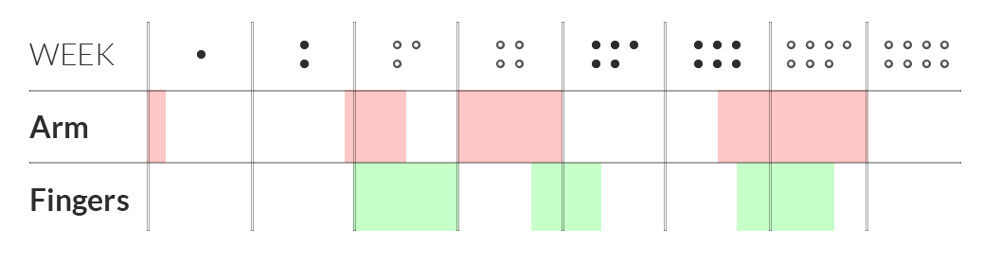
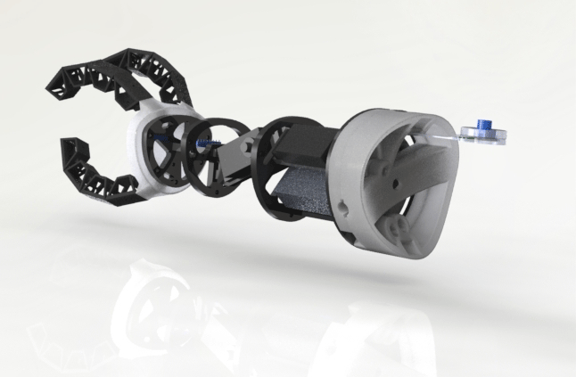
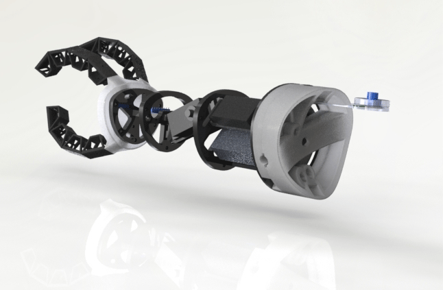
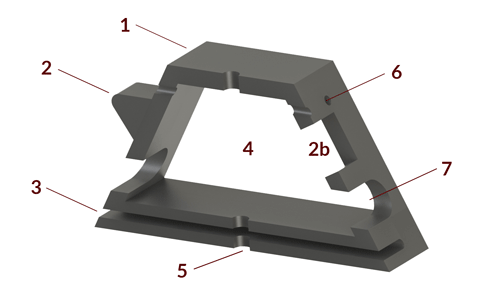

ICF PROSTHETICS
What the under-the-elbow prosthesis market looks like: fork over $90K for a high-tech myoelectric or around $5K for a simple, shoulder-actuated claw. Both are cripplingly expensive and require extensive therapy to use effectively. Three peers and I thought this was a ridiculous paradigm, so we developed a smarter and cheaper under-the-elbow prosthetic arm. Two months later, the result was a $170, 0.981 pound arm that maps residual limb movement to prosthetic arm and hand motion.
See it in action!
I spearheaded development of the arm and fingers. I've always had this idea that the Agile/Scrum workflow framework is better suited for software rather than hardware since there is zero manufacturing cost, both in terms of materials and manufacturing time. I decided to seize the opportunity to challenge my assumptions. By following the Agile/Scrum framework and utilizing rapid prototyping (3D printers, lasercutters) we produced eight prototypes in eight weeks, learning incrementally with each revision.
Arm Development
There were several mechanical design challenges to overcome:
Challenge 1: Space constraints. We intended for our prosthesis to be adaptable to users of all ages, children especially. As such, the smallest arm dimensions were chosen: 6" in length and 3" in diameter at the widest point.
Solution: Up till REV-03, a gearmotor, Arduino Uno and Adafruit shield were used as the means of actuation and the microcontroller, respectively. Clever component placement could only go so far, but the fact remained that the components, courtesy of the various stockrooms on campus, were just too bulky. Investing in a continuous rotation high-torque servo and Arduino Nano meant that we had much smaller components and could ditch the Adafruit shield.
Challenge 2: Mass constraints and distribution. To reduce the amount of torque the user experiences on his or her residual limb, as much of the arm's "insides" had to be packed as close to the elbow-end as possible. Now, refer to Challenge 1.
Solution: Much CAD, clever component placement. Prototypes from REV-04 onwards, thanks to the smaller microcontroller and actuation, is weighted towards the elbow end of the prosthesis.
Challenge 3: Accessible. Ensuring the design is easily alterable so that those in the DIY community can customize as necessary.
Solution: An experiment in Solidworks' linked dimensions, which allows the user to modify a single dimension and have all other components scale accordingly.


 

Finger Development
(1) Trapezoidal shape allows each joint to curl in on itself. (2) When a finger is curled, the point nests in the corresponding slot (2b) and prevents the finger from twisting. (3) Spring steel, which keeps the fingers in the open position, is routed through this slot. (4) Each finger joint is hollowed to reduce mass. (5) 1/16" dowel pins are press-fit through this hole to keep the spring steel in place. (6) Routing holes for the fishing line and attached to a servo within the arm. (7) Routing for sensor wiring.